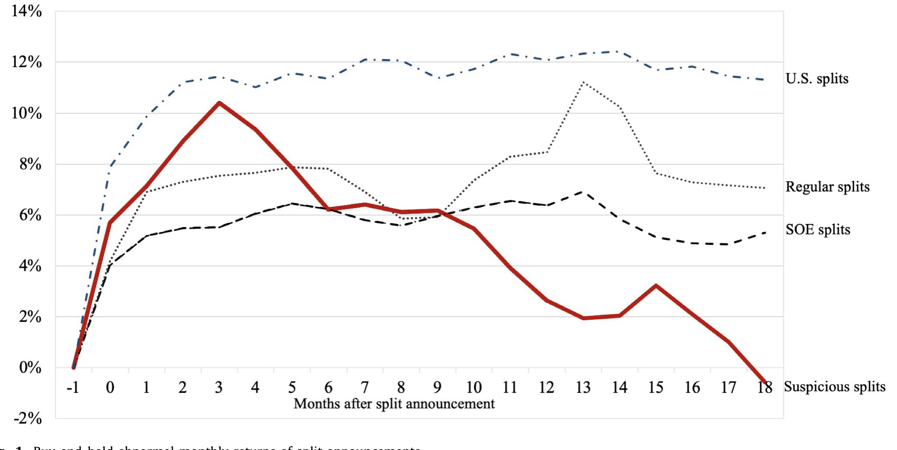
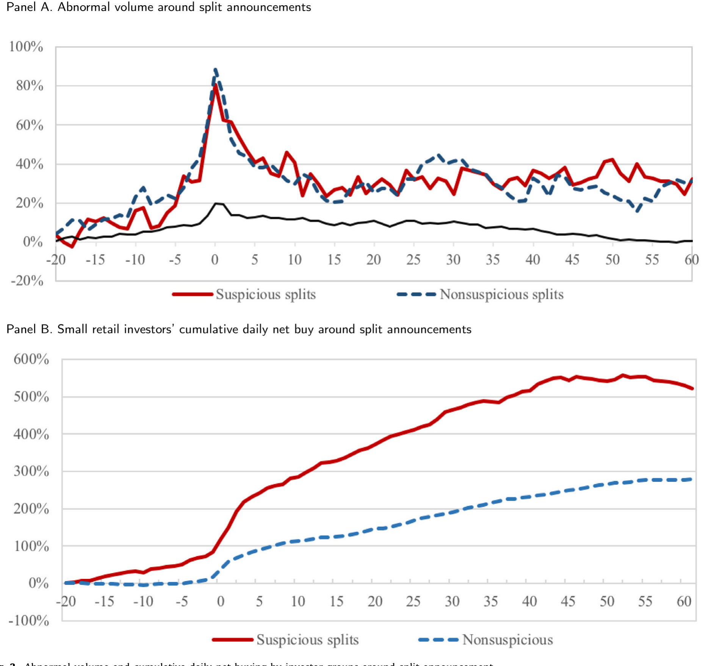
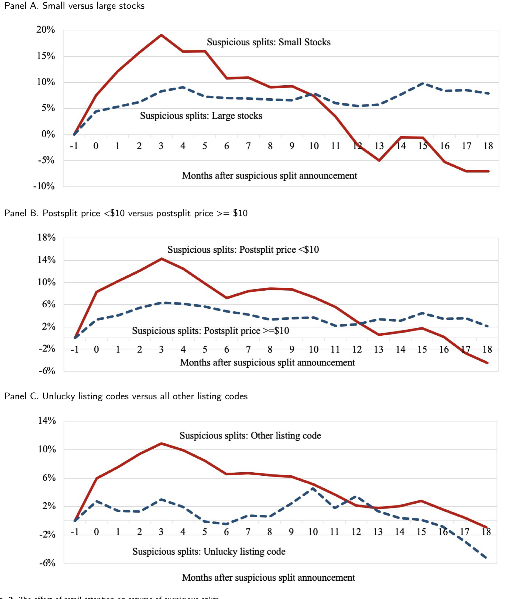
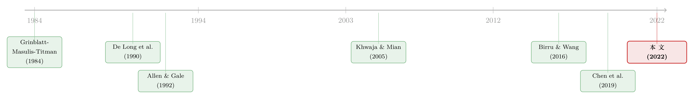

一次「拆股」，如何把散户钉在最高点
本文读的是 Titman, Wei & Zhao (2022, JFE)：他们用上海证券交易所的全账户交易数据，识别出一批「可疑」的拆股公司——这些公司借拆股（往往还配合其他动作）人为抬高股价，结果股价先涨约 10%、再在 18 个月内跌回甚至跌穿拆股前的水平；与此同时，小散户在高位接盘，老练的大户在公告前埋伏、公告后出货，而内部人则趁机减持大宗、用股票质押套现。
1 一个本不该有「反转」的故事
先讲一个反直觉的事实。
在美国，公司宣布拆股（stock split）通常是个好消息：股价应声上涨，之后还会有一段温和的「漂移」（drift），但不会反转。学界对此有两种解释——要么拆股是管理层在传递「我对未来有信心」的可信信号（Grinblatt, Masulis & Titman, 1984），要么是过度自信的投资者对公司事件反应不足（Daniel, Hirshleifer & Subrahmanyam, 1998）。无论哪种，价格的上涨都是永久的。涨上去，就不再下来。
可是把镜头切到中国，画面就变了。
本文的三位作者——其中 Sheridan Titman 正是 1984 年那篇拆股信号经典论文的作者之一——发现中国有一批拆股，走出了一条漂亮却危险的「倒 U 形」曲线：公告后股价先冲高约 10%，然后在大约 18 个月里一路下滑，跌回拆股前的水平，甚至更低。

Figure 1: Buy-and-hold abnormal monthly returns of split announcements
这条曲线，才是整篇论文的「核心」。因为有没有反转，恰恰是区分「市场操纵」和「其他机会主义行为」的分水岭。一次永久性的上涨，可能只是市场对好消息反应不足、慢慢消化；但一次先涨后跌、最终回到原点的过山车，说明那段涨幅从一开始就是「假」的——是被人为吹起来的泡沫，吹起来是为了让某些人在高点把东西卖出去。
于是一个自然的问题是：谁在高点接盘？谁又在高点离场？ 这篇论文最了不起的地方，是它真的能回答这个问题——因为作者拿到了别人拿不到的数据。
2 为什么是中国，为什么是拆股
要让「拆股操纵」这件事跑得通，需要两个条件，而中国市场恰好两个都满足。
第一，散户主导，且不够老练。 在上交所（Shanghai Stock Exchange, SSE），散户贡献了近 90% 的日成交量。而这些散户中，约有三分之一没有高中学历；一份 2014 年的调查显示，新开户者里大多数人连高中文凭都没有（Gan et al., 2015）。这样的投资者群体，很难去识别一次拆股背后的「警示信号」。
第二，做空受限，套利者进不来。 A 股在 2010 年之前完全禁止卖空；即便 2016 年放开后，仍有近 70% 的股票被禁止做空。这意味着，当一只股票被人为高估时，理性的套利者没有工具去做空它、把价格拉回来。泡沫一旦吹起，就只能等它自己破。
在这两个条件下，拆股成了一个近乎完美的操纵工具。为什么？因为拆股本身天然吸引注意力（Almazan, Banerji & de Motta, 2008）。它需要股东大会批准、要在年报里提出（样本里 92% 如此），消息一出，散户的目光就被吸引过来。一个心怀不轨、又急需用钱的内部人，完全可以借这股注意力的东风，把股价短暂地顶上去，然后趁机出货。这和 Benabou & Laroque (1992) 的模型一脉相承：掌握私有信息的内部人，可以故意发布带偏差的公开信息来操纵价格。
这事在中国是违法的。《证券法》第 77 条明令禁止操纵市场。本文提到一个标志性案例：泽熙投资的徐翔，因伙同上市公司管理层发布拆股公告、同时用不相关账户对倒（wash trade），被判处五年半有期徒刑，罚没 110 亿元。作者想说的是：徐翔案不是孤例。
3 识别策略：用「公告当时就能看到」的信息去筛
这篇论文没有用双重差分 (difference-in-differences, DiD)，也没有用工具变量 (instrumental variable, IV)。它的识别核心，是一套事前 (ex ante) 分类 + 事件研究 (event study) 的组合。逻辑很朴素：用拆股公告当时就已经公开的信息，去圈定一批「看起来很可疑」的拆股，然后看这批股票后来的命运。
关键在于，作者强调这些信息「虽然当时公开，但中国散户基本没能力去获取和解读」。于是这就构成了一个干净的对照：同样是公开信息，操纵者读得懂，散户读不懂。
具体怎么筛？首先，把国企（state-owned enterprises, SOE）整体剔除。理由是国企高管是政府任命的，他们在意的是体制内的政治晋升排名，搞股价操纵这种「敏感动作」对他们成本极高、收益极低（Fan, Wong & Zhang, 2007）；而且国企高管持股本来就少，没动机。作者在国企的拆股里也确实没发现操纵迹象。这一步把「没有操纵动机」的样本先排除掉，剩下的非国企才是嫌疑池。
接着，在非国企里，再用三个「动机」标准做分层——一只拆股只要满足其中任意一条，就被归入「可疑（suspicious）」：
- 解禁临近（lock-up expirations）：有影响力的大股东（机构、或持有「附加限售」「附加承诺」「配对股份」「额外配售」的股东）手里的限售股，正好在拆股公告前后（月份 −1 到 +6）要解禁。内部人有强烈动机让此时的股价「暂时高一点」（Spatt, 2014）。
- 时点反常（atypical timing）：拆股发生在传统拆股窗口之外，或者发生在近期股价表现很差之后。这很可疑——因为拆股的常规理由是把涨太高的股价拉回「最优交易区间」（Baker & Gallagher, 1980），跌完了还拆，逻辑上说不通。
- 高应计（high accruals）：拆股的同时申报了很高的应计利润，而高应计往往与盈余操纵相伴（Teoh, Welch & Wong, 1998a, b；Piotroski & Wong, 2012）。
对照组则是：非国企里不满足任何可疑标准的「常规拆股」、国企拆股、以及美国拆股。Fig. 1 里那四条线，把这套对照展示得淋漓尽致：只有「可疑拆股」那条实线走出了倒 U；常规拆股、国企拆股、美国拆股都是涨上去就不回头。
这套识别有一个聪明的「自我验证」：可疑标准是基于动机（谁有理由操纵），而结果检验的是价格反转（是不是真被操纵了）。动机和后果在数据里对上了，这比单纯找一个相关性要有说服力得多。当然，它不是随机实验，这一点我们留到最后再批评。
4 数据：拿到了账户级别的「案发现场」
光看价格反转，还只是「嫌疑」。这篇论文真正的杀手锏，是它能看到每一笔交易背后是谁。
作者的数据来自多个来源：拆股与日度回报来自 CSMAR，样本期 1999/01–2015/06，剔除停牌、ST/PT 等异常股票后，从 4510 笔拆股缩到 3716 笔。中国的拆股分「送股」和「转增」两类，会计处理不同但经济实质一样，样本里 84% 是转增。
而最核心的，是上交所完整的账户级交易记录：1999–2015 年所有转增股的逐笔成交（含加密账户标识、价格、数量、买卖方向、时间戳），外加 2013–2015 年全部股票的完整交易记录。上交所把账户分成 12 类，作者归并为四组：
- 小散户：账户财富 ≤
500 万元RMB； - 大户：账户财富 >
500 万元RMB； - 机构：公募、券商资管/自营、机构投资者、保险；
- 其他：QFII、社保。
此外还有 CSMAR 的场外大宗交易数据（2002–2015）、WIND 的股票发行与股票质押贷款数据（2006–2015），以及东方财富股吧的 789,461 条帖子（2010/01–2013/04，覆盖 1410 只股票）。
有了这套数据，作者就能像看监控录像一样，回放「案发现场」。
5 主要结果：谁接盘，谁离场，内部人拿什么
第一幕：散户接盘。 小散户对拆股是无条件地追逐——无论可疑还是不可疑，公告后净买入都显著增加，规模相当于随后三个月平均日成交量的约 450%。这印证了作者的猜想：不够老练的投资者，根本识别不出可疑公司的警示信号，照单全收。
更耐人寻味的是：小散户只在可疑拆股上，会在公告之前就显著加仓。这暗示有信息泄露（information leakage）。
第二幕：大户离场。 与散户相反，大户（> 500 万 RMB）在公告后是净卖出方，且在卖可疑拆股时尤其激进。而在公告前约一个月，大户在所有类型的拆股上都在悄悄吸筹——他们像是提前知道了拆股要来。账户身份虽被匿名化，但这一模式与 Chen et al. (2019) 的发现吻合：大账户是知情的，被怀疑属于公司内部人。大户「公告前买、公告后卖」的打法，正是一种利用正反馈交易者（positive-feedback traders）的成熟策略（De Long, Shleifer, Summers & Waldmann, 1990）。

Figure 3: Abnormal volume and cumulative daily net buying by investor groups around split announcement
谁在接盘？作者进一步刻画了可疑拆股买家的画像：账户余额更小、开户更晚、过往业绩更差、交易更频繁、更可能是男性——也就是更可能过度自信（Barber & Odean, 2000, 2001）。一句话，最不该接盘的人，接了盘。
第三幕：注意力是燃料。 作者还发现，可疑拆股的「倒 U」在小盘股、以及把名义价格压到 10 美元以下的拆股里更极端——这正契合散户偏爱小盘、低价股的习性（Lee, Shleifer & Thaler, 1991；Kumar & Lee, 2006）。反过来，对于那些因「不吉利」代码（数字迷信）而被部分散户回避的可疑拆股，run-up 和反转都消失了（Hirshleifer, Jian & Zhang, 2018）。换言之：没有散户注意力，操纵就不成立。

Figure 2: The effect of retail attention on returns of suspicious splits
第四幕：内部人套现。 操纵是有成本的（用拆股发假信号要冒风险），所以只有当收益足够高时内部人才会干。收益从哪来？作者找到两条变现渠道：
- 大宗减持：内部人借高股价，通过场外大宗交易把大笔股票卖给对手方，绕开「三个月内不得卖出超 1% 公司股份」等监管限制。数据显示，大宗交易更可能发生在「可疑拆股 + 临近解禁」的组合周围；而无条件来看，大宗交易和拆股之间没有显著关系——是「可疑」这个条件，让关系浮出水面。
- 股票质押贷款：股价越高，能质押出的钱越多。作者发现，在「可疑拆股 + 高应计」的组合周围，股票质押贷款的比例显著上升。
第五幕：舆论造势。 用泊松回归 (Poisson regression) 估计，东方财富股吧的发帖量在可疑拆股公告前两周显著放量。虽是旁证，却和「拉高出货（pump and dump）」的剧本严丝合缝。
(关于散户为何总在这种时刻被「推」着接盘，可参见《当波动率曲面被「散户」推歪》与《散户的栖息地》。)
6 拆股真的是「特别」的吗
到这里，一个挑剔的读者会问：会不会是散户对所有吸引眼球的公司事件都这样追？拆股没什么特别的？
作者做了一个漂亮的反驳。他们用 2013–2015 年全市场账户数据，对比了拆股公告者和一个「规模相近、盈余变化相近」的非拆股匹配样本——散户只对拆股显著加仓，对匹配样本不加。再看分红：派息或增派股息没有显著的公告效应，散户也没有因为分红而显著加仓。
结论是：拆股是特别的。 它比其他公司行为更能勾起散户的兴趣。这一步把「散户只是普遍地追热点」这个替代解释挡了回去。
作者还顺手做了一组替代基准检验：把可疑拆股匹配到「具有同样可疑特征 / 同样盈余惊喜 / 同样发了分红」的非拆股公司，算超额收益。结果倒 U 形依旧存在，有时甚至更明显——说明这套发现不是「可疑特征本身」「盈余惊喜」或「分红」带来的副产品，拆股确实是操纵工具箱里独立的一件工具。
7 文献脉络
把这篇论文放回它所在的研究长河里，线索其实很清晰。
最早，市场操纵是个理论问题。Allen & Gale (1992) 给出了基于信息的操纵模型，Benabou & Laroque (1992) 则说明掌握私有信息的「内部人、专家」如何用公开喊话来操纵价格。与此并行，拆股被放进了信号的框架：Grinblatt, Masulis & Titman (1984) 论证拆股可以是可信信号；而 De Long, Shleifer, Summers & Waldmann (1990) 的正反馈交易模型，则为「老练者如何利用噪声交易者」提供了武器。

接着，研究从理论走向实证证据。Khwaja & Mian (2005) 在巴基斯坦交易所的经纪商记录里抓到了制造「先涨后跌」的对倒交易；Aggarwal & Wu (2006) 系统刻画了美国市场的操纵特征。然后是行为金融的视角：Birru & Wang (2016) 提出「名义价格幻觉（nominal price illusion）」——投资者会误以为低价股有更大上涨空间，这给拆股操纵提供了心理基础。
而真正离本文最近的一步，是 Chen et al. (2019)：他们在中国发现了围绕涨跌停板的操纵——大户把价格拉到涨停，再在次日高位卖给天真散户。本文与之互补，但把焦点从「价格限制」这一交易机制，挪到了拆股这一公司行为上。这正是本文的独特定位：第一次系统地把「公司行为」纳入操纵研究，用事前信息圈出可疑公司，并用账户级数据还原了整条食物链。
(Chen et al. 那条「涨跌停板上的操纵」线索，与本文同源；对中国市场微观操纵感兴趣的读者，可一并参看。)
8 评论与延伸（Q&A + 研究方向）
(a) 几个可能的疑问
Q：「可疑」分类是事前公开信息，但散户读不懂，这个假设可信吗？
比较可信。解禁日期、应计水平、拆股时点这些信息确实公开，但需要交叉多个数据库、做财务分析才能拼出「警示信号」——这对一个三分之一没有高中学历、近九成靠散户成交的市场来说，门槛确实高。作者也做了一个侧证：在散户因数字迷信而回避的「不吉利代码」拆股里，反转消失了，说明驱动反转的正是散户注意力本身。
Q：价格反转一定等于操纵吗？会不会只是散户「估值错误」？
这是最难排除的替代解释（Birru & Wang, 2016 的名义价格幻觉就是一例）。作者承认无法完全证伪，但补了两条旁证：一是大户「公告前买、公告后卖」的精准择时，二是内部人借机做大宗减持和股票质押套现。单纯的估值错误，解释不了内部人这套协调一致的变现动作。
Q：把国企整体剔除，会不会把样本「挑」得太干净？
作者是有意为之，且偏保守——宁可漏掉真操纵，也不愿误判。理由是国企高管以政治晋升为重、持股又少，操纵动机弱；他们在国企拆股里也确实没找到反转。代价是外部有效性：结论只适用于非国企，不能推广到整个 A 股。
Q：大户就是内部人吗？账户是匿名的，怎么敢这么说？
严格说，作者只能说大户「行为像知情人」：公告前约一个月在所有拆股上吸筹，这种择时很难用运气解释。结合 Chen et al. (2019) 对大账户知情性的独立证据，「大户中有相当部分是内部人或其关联方」是一个合理但未被直接证实的推断。
Q：450% 的净买入量级，是不是被极端值带高了？
这是相对「平均日成交量」标准化后的累计净买入，反映的是散户在公告后三个月里的持续涌入，而非单日。它的意义在于方向和持续性——散户是稳定的、大规模的接盘方，而不在于这个具体数字有多精确。
Q：这套结论今天还成立吗？样本止于 2015 年。
要打个问号。2016 年后做空限制虽仍在，但监管对拆股、对倒、股票质押的审查明显趋严，徐翔案本身就是震慑。机制（散户主导 + 做空受限）若仍在，操纵的土壤就在；但具体工具和强度可能已随监管演化。
(b) 几个可能的研究问题与提案
1. 把镜头转向信用市场：可疑公司的债券价格在「拆股操纵窗口」里发生了什么？
【经济故事】如果内部人在拆股期间同时做股票质押贷款套现，那么债权人（包括公司债持有人）实际上在为一个被人为高估的抵押品定价。股价反转后，质押爆仓和信用风险会怎样传导到债券利差？这是把「股票操纵」和「信用风险」打通的故事。 【可行性】中。需要 CSMAR/WIND 的公司债成交与利差数据，匹配本文的可疑拆股样本，做事件研究。难点是中国公司债流动性差、成交稀疏，识别需要谨慎处理稀疏数据。
2. 外资进入是否抑制了拆股操纵？
【经济故事】2014 年沪港通开通后，更老练的境外机构（其交易模式与本地散户截然不同）进入 A 股。如果操纵依赖「散户读不懂信号」，那么外资持股比例更高的股票，可疑拆股的 run-up 和反转应该更弱。这能直接检验「不老练投资者是操纵前提」这一核心机制。 【可行性】高。沪港通标的提供了准自然实验，可用 DiD（标的 vs. 非标的、开通前后）。数据可得，识别相对干净，且正好接续本文的「注意力/老练度」机制。
3. 解禁日历的「可预期性」能否反过来预测操纵？
【经济故事】限售股解禁日在上市时就基本确定。如果内部人系统性地在解禁前安排拆股来托价，那么用解禁日历就能事前预测哪些公司更可能出可疑拆股。这把本文的「事后识别」推向「事前预警」，对监管有直接价值。 【可行性】高。解禁数据公开且前定（pre-determined），可构造一个预测模型，再做样本外检验。识别上要小心拆股与解禁的内生联合决定，但作为预警工具门槛不高。
4. 股吧情绪的「制造」能否与真实信息区分开？
【经济故事】本文发现可疑拆股公告前两周股吧发帖放量，疑似有组织造势。能否用文本/账号特征（新注册、高频、措辞雷同）把「水军」帖与自然讨论分开，进而量化「人造注意力」对接盘量的边际贡献？ 【可行性】中。东方财富股吧数据可得，文本分类技术成熟；难点是缺乏「水军」的真实标签，只能用行为代理（account-level 特征）做无监督识别，结论会偏旁证。
9 我的判断
这篇论文最大的贡献，是把「市场操纵」从理论模型和零星案例，拉进了账户级的微观证据。它做到了别人很难做到的事：在同一套数据里，同时看到了价格的反转、散户的接盘、大户的择时、内部人的套现、以及舆论的造势——五条线索指向同一个故事。把「公司行为」作为操纵工具来研究，也是一个原创且重要的视角。Fig. 1 那条四线对照的倒 U，几乎是教科书级的「一图胜千言」。
但识别上的担忧也要说清楚。这不是一个随机实验。 「可疑」分类终究是作者构造的事前筛子，倒 U 形是相关性而非因果——价格反转、散户接盘、内部人套现这三者，在数据里高度同步，却无法排除它们共同由某个未观测的第三因素驱动（比如某类公司本身就既爱拆股、又招散户、又有套现需求）。账户匿名化让「大户=内部人」始终停留在合理推断，而非证实。作者自己也坦承：拆股从来不单独出现，它总与盈余发布、分红、其他公告捆绑，所以只能说拆股是操纵工具箱里的「一件」工具，而非唯一元凶。
我接下来最想看到的，是外生冲击下的检验——比如用沪港通这样的准自然实验，看「老练投资者进场」是否真的削弱了操纵（上面的研究提案 2）；以及把这条链条延伸到信用市场，看股票质押和大宗减持如何把一次股票操纵的代价，最终转嫁给债权人。如果操纵的故事是真的，那它的账单，不会只落在接盘的散户头上。
参考文献
- Aggarwal, R.K., Wu, G. (2006). Stock market manipulation. Journal of Business 79, 1915–1953.
- Allen, F., Gale, D. (1992). Stock-price manipulation. Review of Financial Studies 5, 503–529.
- Almazan, A., Banerji, S., de Motta, A. (2008). Attracting attention: cheap managerial talk and costly market monitoring. Journal of Finance 63, 1399–1436.
- Baker, H.K., Gallagher, P.L. (1980). Management's view of stock splits. Financial Management 9, 73–77.
- Barber, B., Odean, T. (2001). Boys will be boys: gender, overconfidence, and common stock investment. Quarterly Journal of Economics 116, 261–292.
- Benabou, R., Laroque, G. (1992). Using privileged information to manipulate markets: insiders, gurus, and credibility. Quarterly Journal of Economics 105, 921–958.
- Birru, J., Wang, B. (2016). Nominal price illusion. Journal of Financial Economics 119, 578–598.
- Chen, T., Gao, Z., He, J., Jiang, W., Xiong, W. (2019). Daily price limits and destructive market behavior. Journal of Econometrics 208, 249–264.
- Daniel, K., Hirshleifer, D., Subrahmanyam, A. (1998). Investor psychology and security market under- and overreactions. Journal of Finance 53, 1839–1885.
- De Long, J.B., Shleifer, A., Summers, L.H., Waldmann, R.J. (1990). Positive feedback investment strategies and destabilizing rational speculation. Journal of Finance 45, 379–395.
- Fan, J.P.H., Wong, T.J., Zhang, T.Y. (2007). Politically connected CEOs, corporate governance, and post-IPO performance of China's newly partially privatized firms. Journal of Financial Economics 84, 330–357.
- Grinblatt, M., Masulis, R., Titman, S. (1984). The valuation effects of stock splits and stock dividends. Journal of Financial Economics 13, 461–490.
- Hirshleifer, D., Jian, M., Zhang, H. (2018). Superstition and financial decision making. Management Science 64, 235–252.
- Khwaja, A.I., Mian, A. (2005). Unchecked intermediaries: price manipulation in an emerging stock market. Journal of Financial Economics 78, 203–241.
- Kumar, A., Lee, C.M. (2006). Retail investor sentiment and return comovements. Journal of Finance 61, 2451–2486.
- Spatt, C. (2014). Security market manipulation. Annual Review of Financial Economics 6, 405–418.
- Teoh, S., Welch, I., Wong, T. (1998a). Earnings management and the long-run underperformance of initial public equity offerings. Journal of Finance 53, 1935–1974.
- Titman, S., Wei, C., Zhao, B. (2022). Corporate actions and the manipulation of retail investors in China: an analysis of stock splits. Journal of Financial Economics 145, 762–787.